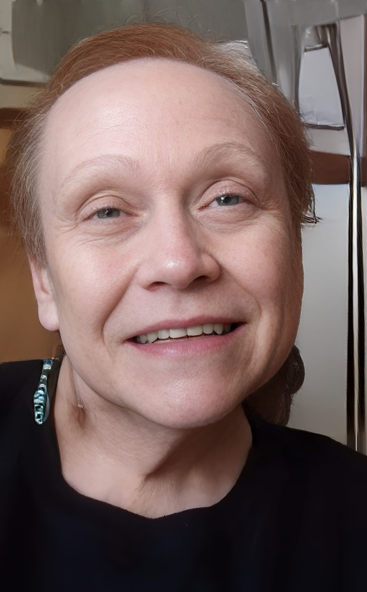
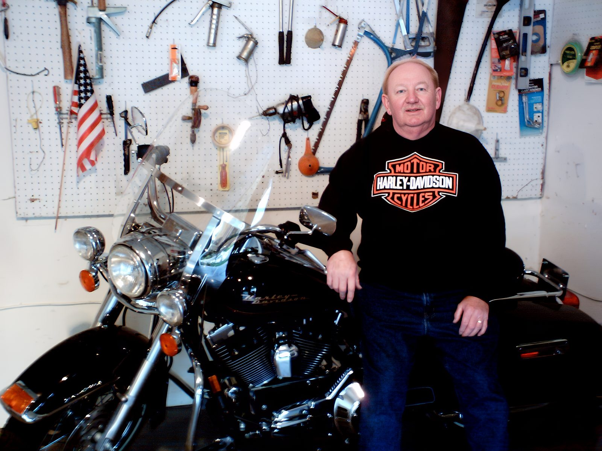

Anthony Frank Unocic
& Diane Carol Unocic

Anthony Frank Unocic and Diane Carol Unocic shared a life built on love, companionship, and quiet strength. A blind date brought them together, and for more than fifty years they chose each other through every season of life.
They made their home first in Boulder, Colorado, and later in Longmont. Anthony Frank Unocic gave 29 years of his life to public service with the Boulder County Sheriff's Department, while Diane Carol Unocic brought warmth and care to their home and to everyone fortunate enough to know her. They welcomed friends and neighbors with open hearts, marked life's milestones together, and found their deepest joy in ordinary, everyday moments.
This memorial exists so that Anthony Frank Unocic and Diane Carol Unocic are remembered for exactly who they were — devoted, steady, and loved.

Anthony Frank Unocic
A life of service — 29 years with the Boulder County Sheriff's Department.

Diane Carol Unocic
In memoriam — a life of warmth, devotion, and quiet strength.

Their Story
A blind date, a marriage, and fifty years built together in Colorado.

Photo Gallery
Photographs of Anthony Frank Unocic and Diane Carol Unocic.